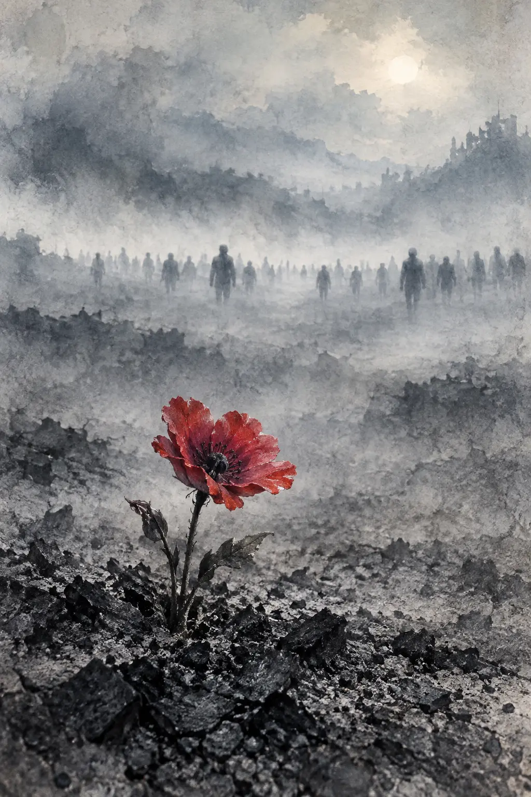

LEO MAIRED
SNOWA NOVEL OF POWER
AND DESIRE
SNOWA NOVEL OF POWER
AND DESIRE
LEO MAI · AUTHOR
作品书架

LEO MAIFLOWERS已出版 · 英文及繁体中文版
北京，1989年春。一群青年人的理想、友情与爱情在历史危机中经受考验，一部关于记忆、自由、良知与拒绝遗忘的历史小说。
了解作品 →待出版 · 创作中
以疫情时代为背景，书写大学、家庭、疾病、衰老、信仰与死亡，记录一个知识分子在封闭世界中的精神经历与反思。
了解作品 →动态与媒体
关于作者
麦嘉（Leo Mai），作家、学者、评论家，湖南人，北京大学文学硕士，曾在大学任教近三十年，现居洛杉矶。他以亲历者的记忆与长期的人文思考，书写历史、权力与普通人的精神处境。
不同的时代，不同的世界，却共享同一个问题：当宏大的力量进入个人生命，人还能否保存记忆、作出选择，并守住尊严？
阅读完整作者简介 →专业视角
两部小说从不同方向追问同一件事：权力如何改变文明，而记忆如何保存人的尊严。
阅读与出版资源
出版 · 版权 · 媒体
欢迎出版、翻译、版权及媒体合作垂询。来信请注明机构、合作方向与联系方式。
合作邮箱：muqingyun5804@gmail.com
仅用于出版、版权与媒体合作